Nicole Harmon
Weekly PPJ Entries for Ricochet Ronin
Nicole Harmon - PPJ #01
Tasks:
Writing Meeting - 1 hour
Narrative and worldbuilding ideas brainstorming - 1 hour
Full team meeting (responsible for meeting minutes) - 1 hour
Total hours for the week: 3 hours
Positive:
Our team is headed in a good direction and we've got a good start.
Everyone seems excited about the project and a lot of people keep contributing new ideas.
The writers (which includes me) seem to be agreeing on ideas and I'm looking forward to getting to
flesh out the narrative and world a bit more in the coming weeks.
People communicate well in our Discord.
Negative:
It does seem that we're a little all over the place in terms of roles, as many want to do a bit of
everything. This isn't inherently bad by any means but could get messy if we don't keep organized.
I wasn't available for the Tuesday meeting and with a team this big, I'm worried this will keep
happening (for myself and others). However, as long as people stay involved with the Discord we'll
be fine!
Upcoming:
I'm working on an overall game mechanics timeline with the developers this week.
I'll also be working on some narrative stuff and looking at ways to implement narrative into a game
that doesn't inherently allow for a lot of it but definitely could if we want it to.
I'll be helping with some design/art elements this week and next.
Writing, Design, Week 3, Nicole
PPJs 02 - Nicole Harmon
Tasks:
Narrative timeline setup - ½ hour
Friday General Meetings + Responsible for Meeting Minutes - 2 hours
Design Meeting - 1 hour
Color Palette - 1 hour
The Ronin Worldbuilding Doc - 3 hours
The Setting Worldbuilding Doc - 2 hours
GDD Setup and Implementation - 2 hours
Total Hours Worked - 11.5 hours
Positive:
The narrative team got a decent amount done towards the worldbuilding and general lore of the game,
including the narrative beatsheet. We should be able to move on to helping other teams with their
tasks full time soon.
As a whole the team seems to be doing their tasks on time and we're moving along at a steady pace.
I'm personally happy with the work I did on the narrative side this week.
Negative:
I realize that we don't really have a true art team and am worried about the more aesthetics based
tasks coming up. I don't have much experience with making and matching a consistent style across
multiple artists so I'm worried about how the art will look once we get more into working on it.
There is still some confusion about the role narrative will play in the game, so I'm not sure where
to go with things like dialogue writing just yet.
We don't have answers for a few categories in the GDD just yet.
Upcoming:
I'll be working on a worldbuilding doc for the Bandit Leader (final boss) and his motivations this
week.
I'll continue refining the GDD with Josh this week.
Narrative, Design, Documentation, Week 4, Nicole Harmon
PPJs 03 - Nicole Harmon
Tasks:
Meeting - ½ Hour
Updating Settings Doc with suggested changes - ½ hour
Corrupt Clan Plans Doc - 1 ½ hour
Color Palette Updates + Website Palette - 1 hour
PPJ/Scrum - ½ hour
Total Hours Worked: 4 hours
Samples of Work:
Clan Plans Snippet
The Bandit Clan wasn't always as feared as it is today. They began like any other thieves, with
petty theft of general stores and stealing purses from old ladies. One day, however, one of the
founding members got their hands on an ancient weapon that elevated them just enough to gain some
notoriety. Rumors of who had stolen the ancient sword from one of the village elders circulated,
until the villagers had convinced themselves they were dealing with a clan much bigger than the
existing one. As such, their numbers swiftly grew as more and more approached the clan in hopes of
joining, whether for money or general intentions of cruelty.
Website Color Palette
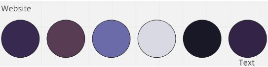Positive:
Everyone is working together on ideas, even across teams, which is cool to see.
Narrative stuff is likely closing out soon and we can start focusing on other areas, like design.
Negative:
GDD wasn't really worked on other than some format changes.
Design team didn't have a meeting to discuss the future of the art direction, so I'm worried about
scope and what can be done before the next build.
Upcoming:
I'll be looking at the rest of the narrative stuff this week, like dialogue and cutscenes.
We should be starting some more design heavy work this week, like environment assets.
Narrative, Design, Documentation, Week 5, Nicole Harmon
PPJs 04 - Nicole Harmon
Tasks:
Design Meeting - 1 ½ hours
Weekly Meeting + Meeting Notes - 1 hour
Environment Art Asset List - 1 hour
Inspiration/Moodboard/Reference Images in Miro for Environment - 2 hours
New Website Palette - ½ hour
Concept Art - 3 hours
Total Hours Worked - 9 hours
Samples of Work:
New Website Color Palette
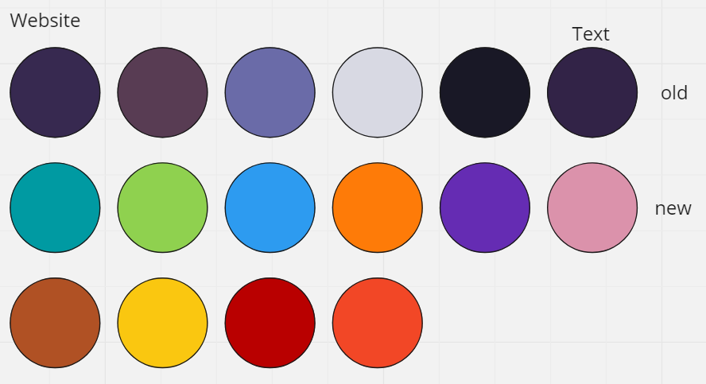Positive:
We have some more people working on art and design now.
We have some concept art going for various things like bullets and environment art so we can
hopefully start implementing real assets soon.
The main character sprite is coming along nicely.
Negative:
There is a lot to be done for environment art and I'm worried I won't be able to get it all done, so
I'll have to delegate out tasks regardless of if people want to work on environment or not, which is
also worrying me.
We've been having trouble finalizing the pixel density for art, but I think we might have finally
agreed on 16x16.
Upcoming:
Finishing up concept art for the environment.
Creating individual environment assets from the asset list in pixel art.
Design, Week 6, Nicole Harmon
PPJs 05 - Nicole Harmon
Tasks:
Meetings and meeting notes - 1 hour
Continued concept art - 4 hours
Researching tile maps and pixel art/Aseprite - 1 hour
Recolor and desaturate environment tiles - 3 hours
Environment art props (lantern, torch, barrel) - 2 hours
Total hours worked - 11 hours
Samples of Work:
Recolored tiles for readability (old vs. new)
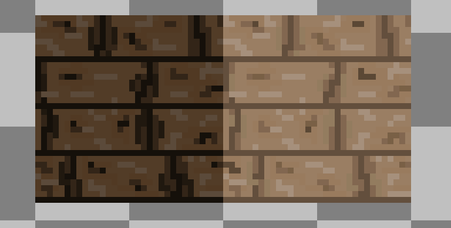 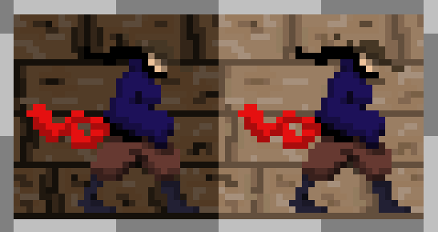Torch and Barrel
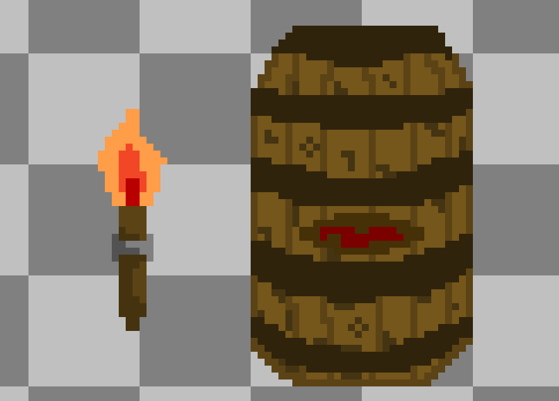Positive:
We finally have art assets in the game, giving it a lot more personality.
We were able to work together on fixes for the environment art, giving it more readability as a
background and ensuring it wouldn't be confusing for the player to distinguish between player
character and background.
So far, the art style seems consistent across the game, my own stuff included, which was something
that worried me initially.
Negative:
There was some miscommunication across the design team.
Because I didn't understand how much the scope of the game had changed, I made concepts that are
less likely to get used.
Because of the miscommunications, I didn't get to do the environment tiles for this week as I had
wanted to, but I did recolor them to make sure they'd fit better into the game.
Upcoming:
I'll be continuing to work on the environment and creating some variations in environment tiles so
each floor doesn't look exactly the same.
I'll keep working on decoration props and other assets.
We'll hopefully be learning how to use tilemaps for environment art.
Design, Week 7, Nicole Harmon
PPJs 06 - Nicole Harmon
Tasks:
Meeting and Meeting Notes - 1 hour
Planning out environment tiles - ½ hour
Environment tiles and props - 4 hours
Playtest survey design questions - 1 hour
Total hours worked - 6.5 hours
Samples of Work:
Environment Tiles
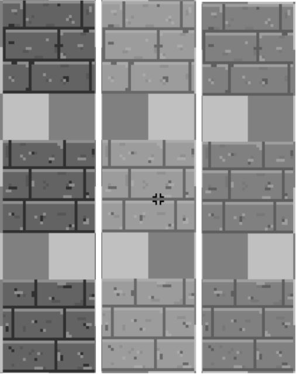 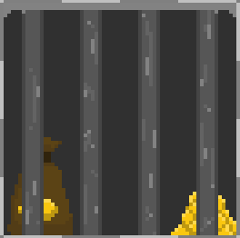
Positive:
We made a lot of progress in the art/design department this week.
We onboarded some more people into level design, so levels should have more variety and get done
faster now.
This is the first time I've made environment art (and pixel art) and I'm happy with how it all
turned out.
Negative:
Still unclear on tile maps and how we'll be using them, as well if I should be making them or just making assets to give to the implementation team.
Upcoming:
I'll probably be doing some different environments so we can have multiple themes. I'll also be working on some more props to better flesh out the environment.
Design, Week 8, Nicole Harmon
PPJs 07 - Nicole Harmon
Tasks:
Implementation Onboarding: 1 ½ hours
Friday meeting and meeting notes: 1 hour
Fixing tile issues from last week: 1 hour
Creating new adobe (material) tiles for more environment variation: 3 hours
Total hours worked: 6 ½ hours
Samples of Work:
Updated Prison Cell
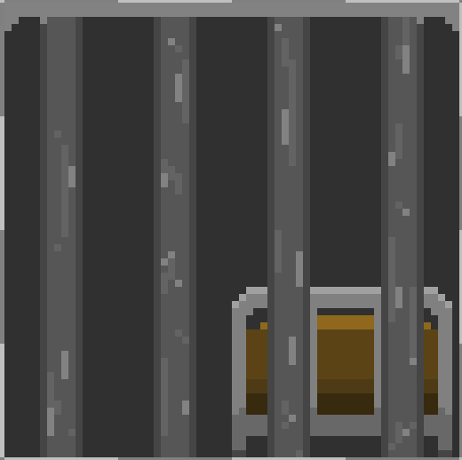Adobe Tiles Background and Window
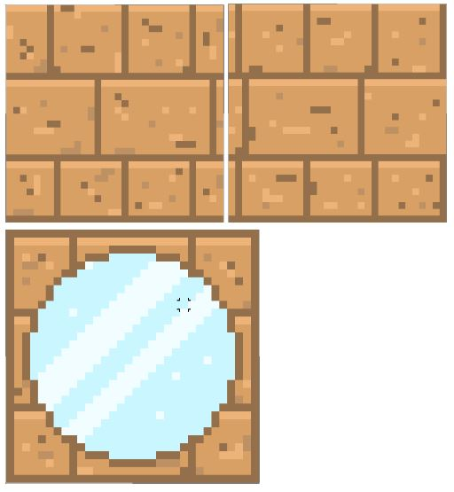Positive:
Personally, I've gotten used to how to make pixel art environments and can more easily do so.
I learned how to implement my own assets so that I can do it myself instead of delegating it to
someone else in the development team.
Everyone seems to be moving along without much issue.
Negative:
I've had several issues with implementation as my computer is on the fritz and barely works anymore
which has slowed me down (consistent unity crashes, memory issues, etc.)
We tend to find issues at the last minute, so it would be better if we could do some more
investigation early in the week rather than on Sundays.
Upcoming:
I'll keep refining existing environment art.
I'd like to make some more props to make environments look more interesting and feel more
believable.
Design, Week 9, Nicole Harmon
PPJs 08 - Nicole Harmon
Tasks:
Recolors/Changes to existing tiles based on feedback - 2 hours
New tiles - 3 hours
Backgrounds - 1 hour
Implementation - 1 hour
Pitch deck - 1 hour
Total hours worked - 8 hours
Samples of Work:
Updated older tiles to blend better into the background
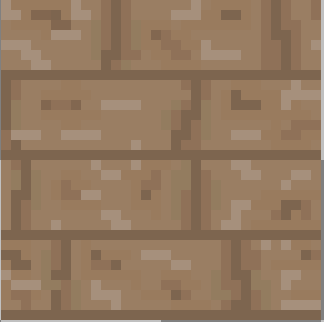 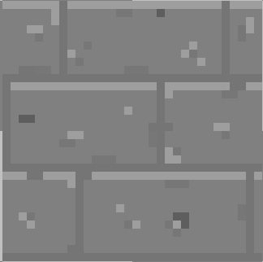Columns
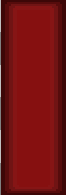Positive:
We seemed to have figured out the issues with the tilemap, so I was able to implement more stuff this week.
Negative:
Because of the break, everyone was traveling or unavailable so we had no meetings to check in on
work.
I don't think the art I made for this week was quite what everyone was looking for, so I'll have to
continue refining this week.
Upcoming:
As mentioned, I'll continue refining my work based on feedback for the final build. I don't think
anything brand new should be made as we approach the final week.
Design, Week 9, Nicole Harmon
PPJs 09 - Nicole Harmon
Tasks:
Recolors of columns - ½ hour
Props/Checkpoint sprite - 1 hour
White walls - 1 hour
Desaturation/changes for existing assets - ½ hour
Implementation of new and revised tiles - 1 ½ hour
Decoration of level - 1 ½ hour
New tile environment examples for slides - ½ hour
Monday Meeting for revisions and rehearsal of pitch deck - 3 hours
Total hours worked - 9 ½ hours
Samples of Work:
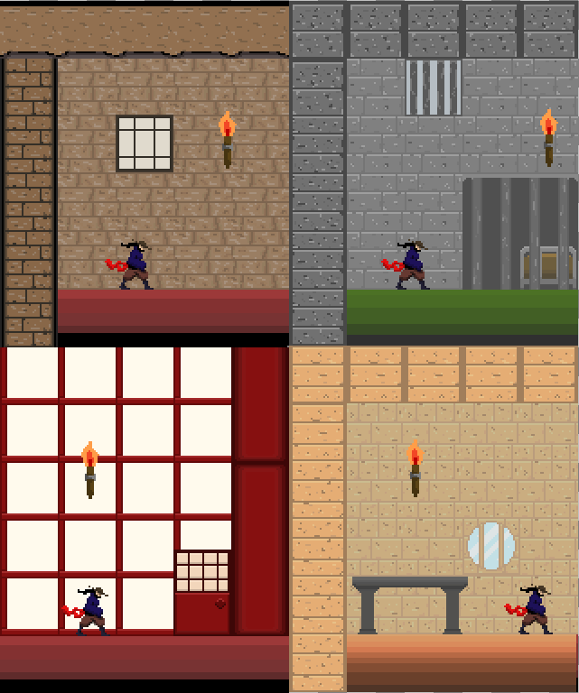Checkpoint Sprite
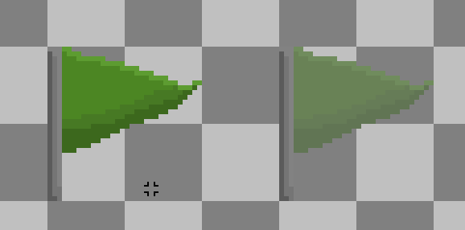Chain Decor
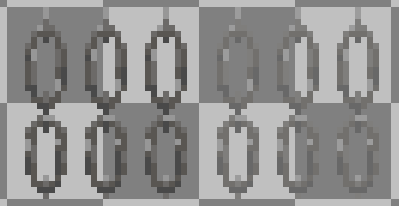Postmortem - Nicole Harmon
Positive:
Though I'm sure a lot of people will talk about this, I do feel that for the most part communication
was a net positive. There were a few times where tasks got confused or were entirely unclear to me
as the environment artist, but I was given opportunities to revise based off of feedback. In the
future I would do a better job of pursuing followup after meetings I couldn't attend (I wasn't able
to go to any Tuesday meetings because of class which is where some confusion came from) instead of
just reading the general notes in the Discord channels about the meetings. Asking for specifics
would hopefully prevent the confusion around tasks. When tasks in development needed to be done and
the devs were asked to pick up a task, usually someone would step up and this was good communication
and collaboration wise.
Everyone did a good job adapting to new roles and filling in where they needed to. I personally did
not want to do art coming into this and I was brand new to pixel art. However, it needed to be done,
and I'm happy with the work I was able to produce after stepping into the environment art role. I
wasn't the only one to do this, and I feel all of the level designers did well as they were brand
new to that. Everyone else did well with their roles though I was less involved with dev so I don't
know how new everyone was to Unity and games.
I think we kept the central vision of the game throughout development which was good. Though our
scope changed repeatedly and our idea for environment changed a lot, we stuck to the core mechanics
and base narrative which I'm happy with. The game is fun with the various enemy types and Ronin
abilities, if we had cut these I feel the game would be different than the core idea we started
with. I'm happy we were able to adapt to changes to still make something really fun and unique with
these mechanics.
Negative:
It was a common issue for people (myself included) to not get stuff in before implementation on
Sundays. Even though we ultimately learned to implement ourselves, it would have still been
beneficial for devs and level designers to have things earlier than Sunday nights. For my own part,
I think I'd benefit from a set time to work each week so that I have no choice but to work on game
stuff for that set amount of time. Often the hardest part for me is getting started on a task that
is daunting because I don't know what I'm doing, which was definitely the case with environment art.
Furthermore, I had a lot going on this term (20+ credits and extra curriculars got in the way a LOT
and derailed my work schedule for this class) so having that time built into my schedule as a
working meeting might be nice in the future.
Our environment assets changed a lot as I learned best practice and what looks best, as well as
while I revised based on feedback. Because of this, I think a lot of the level designers used the
wrong assets in their final levels, using earlier versions and incorrect tiles altogether as walls,
floors, and platforms. In the future, I'll make a point of making a reference sheet (including in
the GDD) for each asset piece, what they are, and what the most updated version is so there's no
more confusion. Even though I replaced things on the tilemap, it probably wasn't obvious to people
that they had to change what they had existing in their levels. This also makes my environment art
look inconsistent, but I updated everything as needed and I think there was just a disconnect
between design and level design.
Our level designers often used plain black bars as platform/wall assets. These don't blend well into
the environment and I think in the future it would be beneficial for me as the environment artist to
have some sort of weekly check-in with level design (outside of regular meetings) to really go over
the current state of levels and see what they need from me. I made horizontal platforms, but if they
needed others I didn't know about it in time. It would also help to have reference of what people
need in this case, which I was given in some cases so I would like it if I'm making a weirdly angled
platform that seems out of the norm. A more dedicated line of communication/weekly meeting between
level design and art design would be a net positive in the future (which isn't to say our
communication was bad! It just wouldn't hurt to have more, as always).